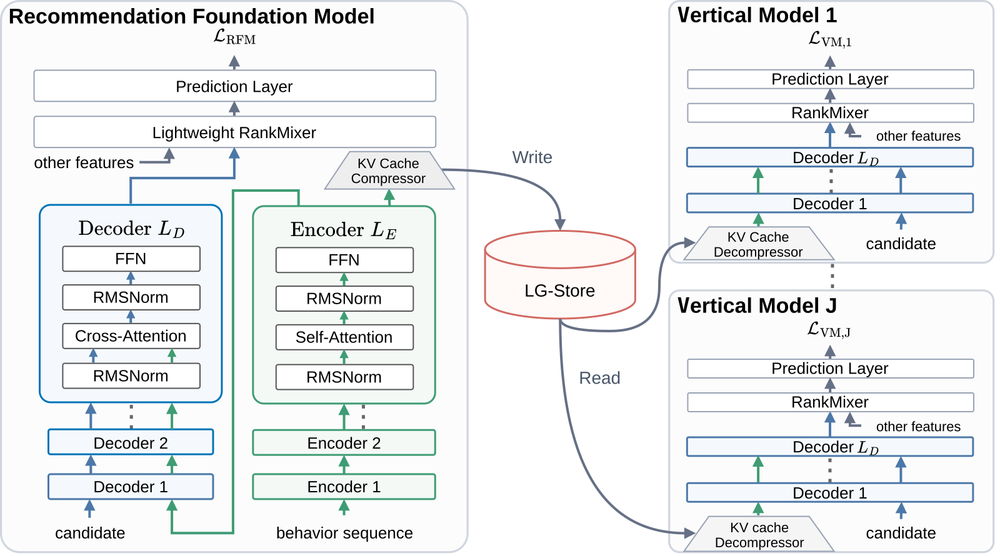
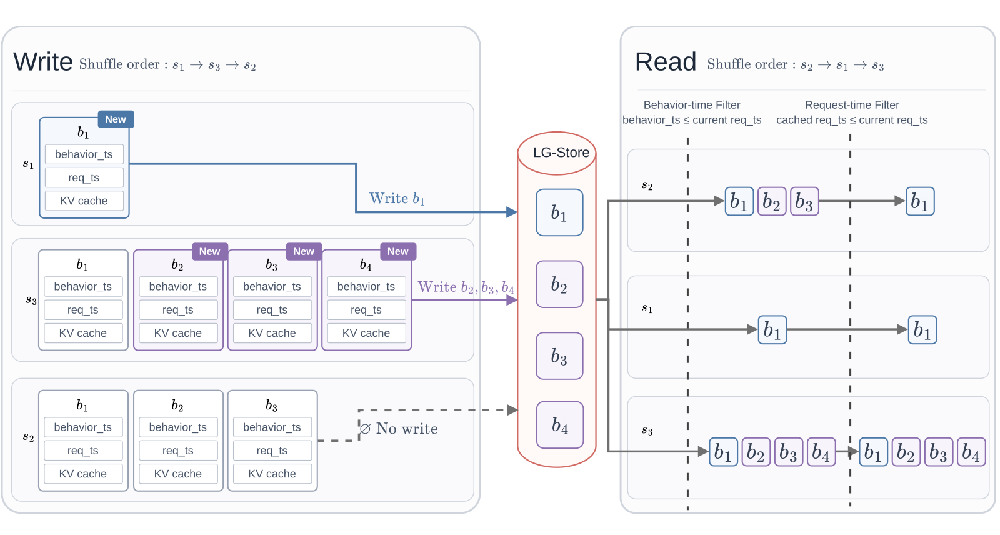
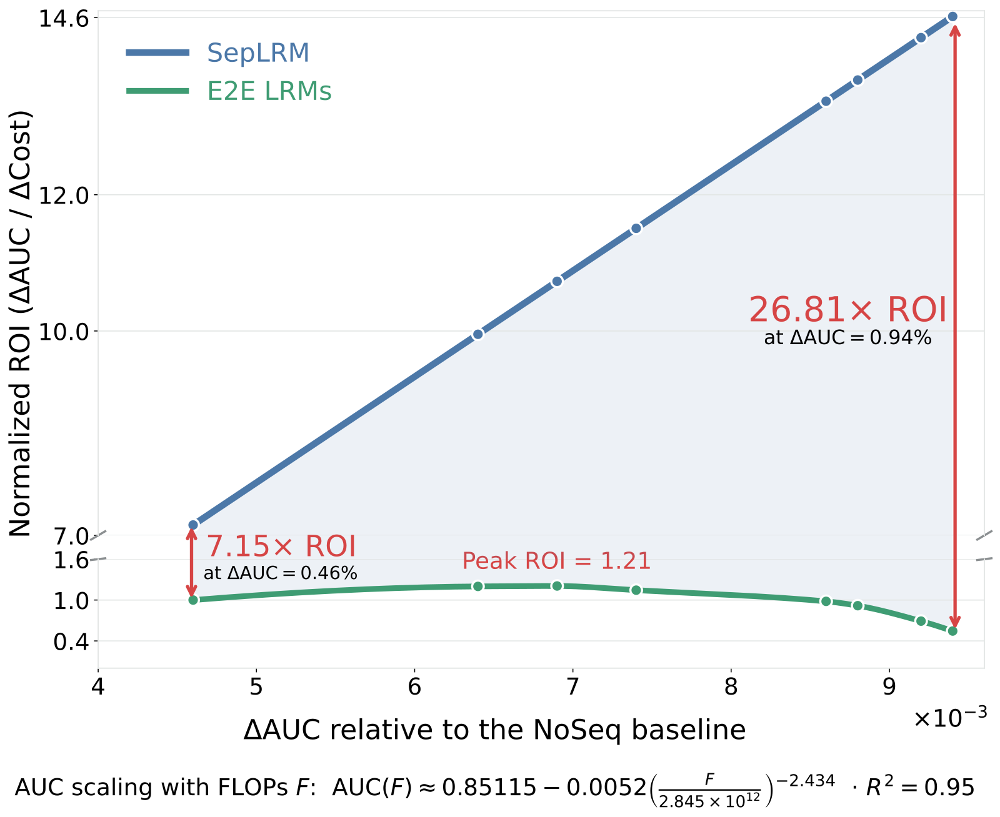

目录 · 7 节
1小周的一次请求里被共享的计算2为什么要传一整张表，传一个用户向量不行吗？3切开之后 AUC 几乎不掉4切开的位置比 RFM 自己的分数更要紧5从两个方向把这张表压小6省下的计算和变快的排序链路7两个线上实验的收益字节跳动的 SepLRM 论文说明，一个平台上的多个排序模型可以共用同一次用户长历史编码，效果基本不掉；前提是把模型切在候选商品第一次和用户历史发生计算的地方。
大平台上有很多排序模型要用同一个用户的历史：电商场景有粗排和精排，商城场景有自己的排序，广告又有一套。这些模型近年都靠拉长行为序列、加大模型容量来提升 AUC 等指标。论文把这类模型叫 LRM（large recommendation model，例如把用户最近 1 万条行为全部送进 Transformer 的排序模型）。
全文用一个小场景（示意）：用户小周最近有 4 条行为，依次是点了跑鞋、买了猫粮、点了跑步袜、看了猫砂盆。电商精排要给一双跑鞋打分，商城排序要给一袋猫粮打分，两个模型用的都是小周这段历史。
难处在于投入和收益不成比例：论文引用的规律是，LRM 的效果随算力增长越来越慢，训练和线上成本却接近线性甚至更快地增长。这笔成本还要乘上模型数量：真实序列能到 1 万条，精排编码一遍，商城排序再编码一遍。作者系统里典型的模型数是 30，同一个人的同一段历史就要编码 30 遍。
现有做法有两条路，第一条路让每个模型自己算得便宜些，比如先挑出和候选相关的一小段行为再建模，或者改用只计算部分行为对的近似 attention，但每个模型仍然各自编码一遍。第二条路先训一个大模型，再把它的计算结果分给下游的排序模型，这类共享大模型叫 RFM（recommendation foundation model）。
第二条路的问题出在分出去的东西太粗。已有的 RFM 里，LLaTTE 分的是压缩后的用户 embedding，小周的跑步兴趣和养猫兴趣被压进同一个向量，跑鞋和猫粮打分时拿到的是同一份东西。Rec-Distill 分的是大模型给每个候选的打分（logits），下游只能把这个分数当学习目标；下游想按自己的候选去查小周的哪几条行为相关，这份分数里查不到。
SepLRM 改的是 RFM 分给下游的内容：一个 RFM 专门编码用户长历史，把每条行为编码后的状态导出成一张表，每条行为一行，下一节细讲。每个业务模型（论文叫 vertical model，简称 VM，例如上面的商城排序）用自己的候选去这张表里按相关程度取信息。在抖音电商的离线数据上，这样切开后的 VM 的 AUC 是 0.85010，和不切开、同样规模整体训练的端到端模型完全相同。
小周的一次请求里被共享的计算
下表按小周的例子走一遍 SepLRM 的四个步骤，前两步只做一次，后两步每个 VM 各做一次。
| 步骤 | 谁来做 | 输入 | 操作 | 产出 |
|---|---|---|---|---|
| 1. 编码历史 | RFM 的 encoder | 小周的 4 条行为 | 每条行为和比它更早的行为做 self-attention，堆多层，全程没有候选参与 | 4 个状态向量，一条行为一个 |
| 2. 压缩存储 | RFM | 4 个状态向量 | 降维、量化 | KV cache（每条行为一行的表，名字来历见下文），写入专用的存储系统 |
| 3. 取信息 | 每个 VM 的 decoder | KV cache、VM 自己的候选和请求上下文 | 解压 cache，把候选特征变成 query 向量，用 cross-attention 给 cache 每一行算权重并加权求和 | 这个候选对应的用户兴趣表示 |
| 4. 打分 | 每个 VM | 兴趣表示、年龄等非序列特征 | 把兴趣表示和其他特征组合起来（特征交互），再由预测头输出分数 | 这个候选的预测分 |
训练时，RFM 和 VM 用各自的数据和目标分开训练：RFM 把算好的 cache 写进存储，VM 训练时读出来当输入。RFM 自己也留着一个 decoder、轻量的特征交互和预测头，让 RFM 有自己的预测任务，encoder 才有训练信号。线上请求到来时，系统准备 cache 和召回、粗排同时进行，可以现场跑第 1、2 步，也可以直接读已经存好的 cache。召回和粗排选出的候选进入下游排序之后，各个 VM 才做第 3、4 步。
KV cache 就是一张表，用户每条行为占一行。小周的这张表长这样（示意）：
第 1 行 点了跑鞋 [1, 0]
第 2 行 买了猫粮 [0, 1]
第 3 行 点了跑步袜 [1, 0]
第 4 行 看了猫砂盆 [0, 1]真实的一行默认有 512 维，并且已经融入了比它更早的行为的信息。这里只写 2 维方便心算，第 1 维当作跑步相关，第 2 维当作养猫相关。这张表在 cross-attention 里提供 key 和 value，所以论文叫它 KV cache。每个 VM 的 decoder 每一层都用自己学到的矩阵，把同一张表乘成这一层需要的 key 和 value，所以表只需要存一份。

为什么要传一整张表，传一个用户向量不行吗？
一个用户向量比一张 1 万行的表便宜得多，所以很自然会想再压一步，把整张表压成一个用户向量传下去。示意：把小周的 4 行取平均，得到 [0.5, 0.5]，这里用取平均代表任何把整段历史压成一个固定向量的做法。跑鞋和猫粮拿到的都是 [0.5, 0.5]，跑步兴趣和养猫兴趣已经混在一起，下游模型的这部分输入对两个候选完全相同。 Hoot 说

先压成一个向量
- 来源
- 压缩的用户表示
- 下游查询
- 自己的短序列
- 甲的向量
- (0.5, 0.5, 0)
- 乙的向量
- (0.5, 0.5, 0)
- 跑步/厨具
- 仍可重新加权
- 越野差别
- 甲乙分不开
只看这个向量，甲乙的输入完全相同，下游怎么算结果都一样。
保留逐条状态
- 来源
- encoder 末层状态
- 下游查询
- 全部历史
- 甲的越野
- 0.6
- 乙的越野
- 0
- 跑步/厨具
- 逐条重新挑选
- 越野差别
- 甲乙分得开
示意权重：越野 query 给第一条 0.7，其余各 0.1。甲 = 0.7×1 + 0.1×(−1) = 0.6；乙的越野维全是 0，读数为 0。
示意：每条行为用（跑步，厨具，越野）三维表示，压缩用取平均代替。甲的四条行为是越野跑鞋 (1, 0, 1)、公路跑鞋 (1, 0, −1) 和两口锅 (0, 1, 0)；乙的两条跑鞋行为都是普通款 (1, 0, 0)，两口锅相同。左栏的来源和查询对象按 LLaTTE 写，取平均只是示意。向量里跑步、厨具这两维，下游结合候选仍能重新加权，回不来的是被平均掉的逐条差别。训练时 RFM 和 VM 各自独立优化：RFM 在训练后期写入 cache，VM 在相应的后期读取，只优化自己的 decoder、特征交互和预测头。线上 cache 可在请求到达时调用 RFM 现算，也可从 LG-Store 预取。 出处: 论文 §1（KV cache 比 logits 或聚合 user embedding 保留更细粒度的行为信息）；§3.2.2 式 9 与 §3.3 式 12（cache 的产出与 VM 读取）；§3.1、§3.4.1（RFM 与 VM 独立优化，后期写入与读取）；§4.2（现算与预取）；§5.2（LLaTTE）。跑鞋与锅的向量、注意力权重均为示意
留着整张表，VM 就能让每个候选自己算权重。cross-attention 按 query 和每一行的相似程度算权重，权重加起来等于 1。示意：跑鞋这个 query 给 4 行的权重是 0.4、0.1、0.4、0.1，加权后得到 [0.8, 0.2]。猫粮这个 query 给 4 行的权重是 0.1、0.4、0.1、0.4，加权后得到 [0.2, 0.8]。这说明同一张表不用重新编码，换一个候选只需要重算一组权重，两个候选取到的内容就不一样了。
这张表能被多个模型共用，前提是它和候选无关。第 1 步编码时，跑鞋和猫粮这两个候选都没有参与计算，所以精排和商城排序可以共用这张表，各自带着自己的候选来取信息。VM 做的 cross-attention 和端到端模型内部的计算是同一种，所以论文预期切开后效果不掉。
切开之后 AUC 几乎不掉
要知道切开后效果掉了多少，需要两个参照模型。NoSeq 是把下面的 E2E LRM 拿掉长序列部分后的模型，代表完全不用长历史的水平。E2E LRM 的序列结构和容量都和 SepLRM 相同，只是端到端训练，代表不切开的水平。TR（transfer rate）衡量 VM 保住了多少长序列收益，算法是（VM AUC − NoSeq AUC）除以（E2E AUC − NoSeq AUC）。
示意：NoSeq 是 0.80，E2E 是 0.84，VM 是 0.83。长序列本来能带来 0.04，VM 拿到了 0.03，TR 就是 75%。
下表是三个数据集上的结果，其中抖音电商和红果短剧是字节的工业数据，KuaiRand-27K 是公开数据。SepLRM 这一列报的是下游 VM 的 AUC，RFM 是 6 层 encoder 加 6 层 decoder，VM 是 6 层 decoder，其他方法也用相同的层数和训练配置。
| 数据集（序列长度上限） | NoSeq | LLaTTE | E2E LRM | SepLRM |
|---|---|---|---|---|
| 抖音电商（10,000） | 0.84131 | 0.84909 | 0.85010 | 0.85010 |
| 红果短剧（5,000） | 0.84162 | 0.84740 | 0.84798 | 0.84798 |
| KuaiRand-27K（5,000） | 0.64640 | 0.68142 | 0.68307 | 0.68308 |
SepLRM 和不切开的 E2E LRM 在三个数据集上的差距最多 0.00001。这说明在 cache 没有压缩损失时，把模型切成 RFM 和 VM 几乎不损失 AUC，TR 约 100%。
LLaTTE 在抖音电商上比 SepLRM 低 0.00101，而论文认定 0.0001 的绝对提升在业务上已经有意义，0.00101 约是这个幅度的十倍。作者的解释是，LLaTTE 把长历史压成固定的用户 embedding，下游模型做 attention 时只能查自己手上的短行为序列，长历史只以那一个向量进入下游，细节到不了下游。
切开的位置比 RFM 自己的分数更要紧
上面的结果依赖一个结构前提：RFM 在 encoder 和 decoder 之间有一条干净的分界。encoder 全程只处理行为，decoder 的每一层都从 encoder 的同一份最终状态里取信息，所以只传最后这一份就够了。论文对比的另两种 RFM 结构 encoder-only 和 decoder-only 没有这条分界，候选在每一层都和那一层的行为表示发生交互。
示意：模型有 3 层。按 encoder 和 decoder 切开时，3 层 decoder 都从同一张 4 行的表里取信息，传 1 张表就够。候选逐层交互的模型需要第 1、2、3 层各自的行为表示，也就是 3 张表；只传最后一张，VM 就复现不出前两层的交互。
作者还验证过，RFM 用这两种结构时，把每一层行为侧的 key 和 value 都传给 VM，TR 能恢复到 100%，代价是要传的东西从一张表变成每层一张，存储和通信大幅增加。下表固定 VM，只改 RFM 的结构和特征交互模块，特征交互模块负责把候选的兴趣表示和年龄等特征做高阶组合，表里「无」表示去掉这个模块。
| RFM 结构 | RFM 的特征交互参数量 | RFM 自身 AUC | VM AUC | TR |
|---|---|---|---|---|
| encoder + decoder | 40 亿 | 0.85010 | 0.85010 | 100% |
| encoder + decoder | 7 亿 | 0.84883 | 0.85010 | 100% |
| encoder + decoder | 无 | 0.83213 | 0.84969 | 95% |
| encoder-only | 40 亿 | 0.85011 | 0.84918 | 89% |
| decoder-only | 40 亿 | 0.85017 | 0.84926 | 90% |
第 1、4、5 行的三个 RFM 自身 AUC 几乎一样，分别是 0.85010、0.85011、0.85017，TR 却是 100%、89%、90%。这说明自身 AUC 几乎相同的 RFM，导出的 cache 在下游的 TR 可以差出十个百分点以上。
判断一份共享 cache 好不好，要看下游 VM 用它拿到多少收益，RFM 自己的 AUC 说明不了这件事。
前 3 行回答的是另一个问题：RFM 需不需要很强的特征交互。把这个模块从 40 亿参数缩到 7 亿再到完全去掉，RFM 自身 AUC 从 0.85010 掉到 0.83213，TR 仍是 100%、100%、95%。这说明特征交互主要影响 RFM 自己的打分，几乎不影响导出的 cache；cache 的质量主要来自序列编码，RFM 的参数预算应该优先花在 encoder 上。
从两个方向把这张表压小
一条长度 1 万的历史，默认每行 512 维、每个数 16 位（BF16），按这个上限粗算，一条样本的 cache 约 10 MB。论文从两个方向压缩：把每条样本的 cache 本身变小，或者去掉同一用户多条样本之间重复存的行为。
压缩单条 cache 又分两种，下表前四行各试了两档。量化减少每个数的位数，INT8 用 8 位，INT4 用 4 位，所以存储降到默认配置的一半和四分之一。降维减少每行的数字个数，所以从 512 维降到 256 维或 128 维，存储同样降到一半和四分之一。
| 压缩手段 | 配置 | 存储占默认配置的比例 | VM AUC | TR |
|---|---|---|---|---|
| 量化 | INT8 | 50% | 0.85013 | 100% |
| 量化 | INT4 | 25% | 0.85001 | 99% |
| 降维 | 256 维 | 50% | 0.84974 | 96% |
| 降维 | 128 维 | 25% | 0.84952 | 93% |
| 换成用户级 cache | 用户级 | 1.3% | 0.84936 | 92% |
同样压到 25%，INT4 保住 99% 的 TR，128 维只保住 93%。这说明存储紧张时，减少每个数的位数比减少每行的维度更划算。
最后一行的用户级 cache 去掉的是样本之间的重复。默认的样本级 cache 给每条样本存一整张表，同一个用户的多条样本重复存了大量相同的行为。示意：小周有 3 次请求，当时的历史长度是 2、3、4 条，样本级共存 9 行；用户级第一次存 2 行，后两次各追加 1 条新行为，共 4 行。
用户级 cache 按用户 id 存，每一行除了行为状态，还记着行为时间和写入它的请求时间。小周的记录长这样（示意），每个括号是一行：行为状态、这条行为发生的时间、哪次请求把它写进 cache。
小周 → [
(跑鞋点击的状态, 行为 09:50, 请求 10:00),
(猫粮购买的状态, 行为 10:20, 请求 11:00),
(跑步袜点击的状态, 行为 10:40, 请求 11:00),
(猫砂盆浏览的状态, 行为 11:30, 请求 12:00),
]这些时间戳是为了防止训练时用到未来信息。训练时样本顺序被打乱，处理一条早的样本时，更晚的请求可能已经把它算出的状态写进 cache，论文把这类内容也一并滤掉。示意：一条请求时间为 10:50 的样本来读小周的 cache，行为时间过滤去掉 11:30 的猫砂盆，请求时间过滤再去掉 11:00 和 12:00 写入的三行，最后只剩跑鞋。
猫粮和跑步袜明明发生在 10:50 之前，却读不到，这就是用户级 cache 的损失。VM 另外放一个轻量 encoder，专门编码这类还读不到的近期行为；VM 的 decoder 把这几条近期行为和 cache 里的历史一起使用，用来弥补这个缺口。
上表最后一行显示，用户级 cache 把存储压到默认配置的 1.3%，TR 仍有 92%。这说明大部分长序列收益可以用很小的存储保住，代价是比默认配置少了 8 个百分点的 TR，所以选哪种粒度取决于存储预算，以及要不要跨阶段、跨场景复用（见下一段）。

用户级 cache 还带来了跨模型复用。样本级 cache 按样本编号查，粗排和精排的训练样本是两套数据流，编号对不上；用户级 cache 按用户 id 查，两边都能查到小周的同一份 cache。作者把一个在电商精排数据上训练的 RFM 的用户级 cache 拿去给另外两个模型用：相对不用 cache 的基础模型，电商粗排的 AUC 提升 70×10⁻⁴，商城排序提升 10×10⁻⁴。
电商粗排候选多、延迟紧，往往做不起完整的长序列建模。粗排 AUC 提升 70×10⁻⁴，说明粗排只加一个轻量 decoder 也能用上长历史；商城的特征分布和训练目标都和电商精排不同，同一份 cache 依然有收益。
这些 cache 放在 LG-Store 上，这是字节为大规模 cache 做的分布式存储。在相同的吞吐、持久性和尾延迟要求下，LG-Store 的平均批量读延迟降低 64%，成本是常规存算分离 KV 存储系统的 43.5%。这说明存取 cache 这笔新增开销，可以靠专用存储压下来。
省下的计算和变快的排序链路
长序列的成本几乎都在 encoder。示意：1 万条行为做 self-attention，忽略常数和层数，约 1 亿次两两计算。decoder 的 query 来自候选和请求上下文，数量很少，这里取 10 个，每个 query 对 1 万行计算，约 10 万次，两者差 1000 倍。
把 decoder 算一次记作 1 份，encoder 算一次记作 1000 份（示意）。30 个端到端模型是 30×1001，共 30030 份。SepLRM 是 1 个 encoder 加 31 个 decoder，多出来的那个 decoder 属于 RFM，共 1031 份，再加上 cache 的开销。这说明模型越多省得越多，省下的大约是（模型数 − 1）次 encoder 计算，30 个模型就省下 29 次。
链路变快来自并行。论文按这样的方式记端到端模型的延迟：先召回和粗排，再编码序列，最后预测，三段时间依次相加。SepLRM 在请求到来时就开始准备 cache，和召回、粗排同时进行，只要准备 cache 不比召回加粗排慢，编码序列那一段时间就从关键路径上省掉了。SepLRM 准备 cache 有两种方式：现场调用 RFM 生成最新的 cache，或者从 LG-Store 读取已有的 cache，后者的新鲜度取决于更新频率。
示意：召回加粗排 60 ms，序列编码 40 ms，下游打分 30 ms。串行的总耗时是 130 ms；并行后是 max(60, 40) + 30，等于 90 ms，省下的正好是编码的 40 ms。如果准备 cache 要 80 ms，总耗时变成 110 ms，就只省 20 ms。这说明只要 cache 的准备时间不超过召回加粗排，排序链路就能省掉编码这一段。

作者在电商数据上做了上图的实验，为了看模型变大时投入产出比怎么变，序列长度从 200 拉到 1 万，encoder 和 decoder 各从 2 层加到 8 层。ROI 是相对 NoSeq 的离线 AUC 增量除以成本增量，成本按加速器小时和单价计算。SepLRM 还要算上 30 天的 cache 存储，所以 cache 的开销已经计入这笔账。作者系统里典型的模型数是 30，所以这里按 30 个模型算。
端到端模型的 ROI 先升后降，SepLRM 的 ROI 持续上升，SepLRM 的 ROI 与端到端模型之比从 7.15 倍扩大到 26.81 倍。这说明在 30 个模型共用一个 RFM 的条件下，序列拉得越长，共享的价值越大；端到端模型扩容到一定规模后，每单位成本换来的 AUC 增量反而下降。
两个线上实验的收益
两个线上 A/B 实验的对照组都是各自业务里已经长期优化的现有线上模型，实验组换成 SepLRM。
第一个实验在 GIP（General Information Platform，字节的通用信息平台，红果、头条、番茄小说都在其中）的广告业务上做。模型用 1 万条序列、4 层 encoder 加 4 层 decoder，实验组分到 20% 的线上流量，跑了 9 天。广告主分数（ADSS）提升 1.961%，广告主价值（ADVV）提升 2.107%。红果、头条、番茄小说三个 App 上这两个指标都在涨，幅度在 1.311% 到 2.492% 之间。这说明收益不依赖某一个 App。
抖音电商用 5000 条序列、6 层 encoder 加 6 层 decoder，分了 30% 流量跑 14 天。短视频电商的人均订单提升 4.6306%，人均 GMV 提升 4.8077%；直播电商分别提升 0.3673% 和 0.3524%。这说明同一套方案在不同内容形式上的收益差很多，短视频的 GMV 提升是直播的十几倍。
这两组 A/B 回答的是「换上 SepLRM 能多赚多少」，对照组是线上模型，所以它们不单独说明切开比不切开省了多少。为了回答后一个问题，作者在同样的部署规模下，分别算了 E2E LRM 和 SepLRM 的 ROI，口径同上一节。GIP 广告上 E2E LRM 是 26，SepLRM 是 224，为 8.62 倍；抖音电商上是 319 和 835，为 2.62 倍。这说明在两个真实部署规模上，切开的方案都拿到了更高的投入产出比。
回到小周的例子，这篇论文的做法可以归结为一件事：那张 4 行的表只算一次，精排和商城排序各拿自己的候选去取信息。换到自己的系统里，判断这样切对不对，先看下游 VM 的 AUC 和 TR，RFM 自己的 AUC 涨了多少并不能回答这个问题。
读完这篇，你觉得
夜读鸮记下了，谢谢你的反馈。
点一下即可，无需登录；再点一次撤回。只统计匿名次数，不记录你是谁。
讨论
欢迎补充实验细节、复现经验或不同看法。需 GitHub 登录。
正在加载讨论…